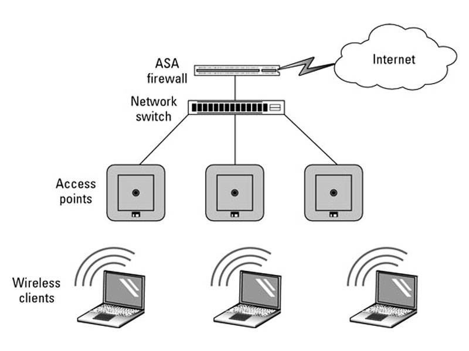

Structura Rețelei Personale
Adresa MAC: 84-C5-A6-2D-82-91
Adresa IP: 193.226.6.237
Debit Download: 50.24 Mbps
Debit Upload: 68.51 Mbps
Specificațiile Stației Principale
| Denumire Componentă | Parametri |
|---|---|
| Procesor | AMD Ryzen 5 3500U with Radeon Vega Mobile Gfx 2.10 GHz |
| RAM | 8,00 GB (5,95 GB utilizabile) |
| Stocare | Disk Local(C:) - 243 GB |
Monitorizare Resurse
Dublu click pentru a vizualiza slideshow-ul resurselor utilizate!